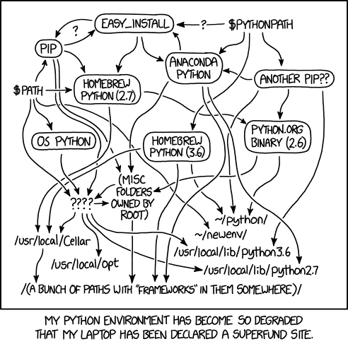

Nix
Jos van Bakel
Created: 2018-12-07 Fri 07:28
Agenda
- Intro
- Why Nix
- Quick tour of Nix
- NixOS
- Conclusion
- Demos in between
Intro
Nix is a powerful package manager for Linux and other Unix systems that makes package management reliable and reproducible. It provides atomic upgrades and rollbacks, side-by-side installation of multiple versions of a package, multi-user package management and easy setup of build environments.
Why
Reproducibility
How we build software
apt install python libmysqlclient-dev wget .../emacs.tar.gz ./configure ... make install
Through a sequence of actions that mutate the filesystem.
Dependency hell
The dependency issue arises around shared packages or libraries on which several other packages have dependencies but where they depend on different and incompatible versions of the shared packages – Wikipedia
Dependency hell: Gentoo

Figure 1: Gentoo packages dependencies
Dependency hell: npm
Figure 2: Npm packages dependencies
Build environments
It can get a mess.

Figure 3: xkcd.com/1987
Customizing packages
- It's hard to customize packages.
- Suppose you want Python with libressl.
- Or OpenCV with GTK bindings.
Solutions
- Pipenv/virtualenv/nvm/rvm/etc.
- Salt/Puppet/Chef
- Docker
- Nix!
Configuration management

Figure 4: Divergence

Figure 5: Convergence
Figure 6: Congruence
A quick tour of Nix
Packages
- Each package gets it's own namespace:
/nix/store/<hash>-hello.x.y
- Can install multiple versions of a package.
- No more dependency hell.
Derivation
The definition of a package is called a derivation.
stdenv.mkDerivation rec { name = "hello-${version}"; version = "2.10"; src = fetchurl { url = "mirror://gnu/hello/${name}.tar.gz"; sha256 = "0ssi1wpaf7plaswqqjwigppsg...1i"; }; buildInputs = [ glibc ]; };
Dependencies
Are linked to specific versions of libraries:
$ ldd result/bin/hello
linux-vdso.so.1
libc.so.6 => /nix/store/mrfc..sw-glibc-2.27/lib/libc.so.6
/nix/store/mrfc..sw-glibc-2.27/lib/ld-linux-x86-64.so.2 => ..
Dependencies (2)
Interpreted executables are wrapped to set the appropriate environment for the exact dependency resolution:
$ cat /nix/store/jx69..gr-rshell-0.0.14/bin/rshell #! /nix/store/az8g..gs-bash-4.4-p23/bin/bash -e export PATH='/nix/store/6lm4..gn-python3-3.7.1/bin:..:$PATH' export PYTHONNOUSERSITE='true' exec -a "$0" "/nix/store/jx69../bin/.rshell-wrapped" \ "${extraFlagsArray[@]}" "$@"
Profiles

Build sandbox
- Time is set to 1 (Unix timestamp).
- Most environment variables are cleared.
- Designated temp and output folders are used.
- Dependencies are immutable (read-only).
- Only specified dependencies are available.
- Build chroot namespace.
- Network access is prohibited.
Build sandbox (2)
Build environments
- Create a build environment on demand with nix-shell.
- Akin virtualenv, Pipenv, etc. but language agnostic.
- Includes system packages like
libmysqlclient-dev.
nix-shell -p python37Packages.requests
Use it!
Install Nix on Linux or MacOS.
https://nixos.org/nix/download.html
Because packages are pure, they have no dependencies on packages outside of the Nix store. This means that they should work on pretty much any GNU/Linux distribution.
NixOS
The Purely Functional Linux Distribution
NixOS is a Linux distribution with a unique approach to package and configuration management. Built on top of the Nix package manager, it is completely declarative, makes upgrading systems reliable, and has many other advantages.
What is it
- GNU/Linux OS build with Nix.
- Kernel, Bootloader and SystemD services.
- Declarative configuration.
- Immutable system.
- Nixpkgs: huge repository of packages.
Declarative
{ config, pkgs, ... }: { services.xserver.enable = true; services.xserver.desktopManager = { xfce.enable = true; default = "xfce"; }; users.users.root.initialPassword = "root"; environment.systemPackages = with pkgs; [ vim git ssh ]; }
sudo nixos-rebuild build|test|boot|switch|..
Reliable upgrades
$ nixos-rebuild build result ├── activate ├── append-initrd-secrets -> /nix/store/mv93..rr-append-.. ├── bin │ └── switch-to-configuration ├── configuration-name ├── etc -> /nix/store/y5zg..yz-etc/etc ├── extra-dependencies ├── fine-tune ├── firmware -> /nix/store/dizl..ly-firmware/lib/firmware ├── init ├── init-interface-version ├── initrd -> /nix/store/rl1r..rr-initrd/initrd ├── kernel -> /nix/store/4b9l..as-linux-4.19.6/bzImage ├── kernel-modules -> /nix/store/97bh..8w-kernel-modules ├── kernel-params ├── nixos-version ├── sw -> /nix/store/vqvz..5h-system-path ├── system └── systemd -> /nix/store/7j4j..j3-systemd-239
Atomic upgrades
- Transactional upgrades.
- Generations are stored beside each other.
- Generations can be garbage collected.
- Rollback to older generations possible.
Reproducible system configurations
If inputs are the same, result should be the same.
- Your configuration files.
- A checkout of the nixpkgs repository.
- Pin both and get a reproducible system.
Conclusion
Cons
- New tool and language to learn.
- Hard to debug problems.
- Security.
Pros
- Huge repository of packages.
- Easy to contribute a new package.
- Community driven.
- Bleeding edge software.
- Reproducible.
- Reliable atomic upgrades.
- Safe to test changes.
- Customization.
Questions?
Lekker Nix doen!
Useful links
Sources
https://nixos.org/nixos/about.html https://www.slideshare.net/sandervanderburg/deploying-npm-packages-with-the-nix-package-manager https://medium.com/knerd/the-nine-circles-of-python-dependency-hell-481d53e3e025 https://xkcd.com/1987/ https://www.usenix.org/legacy/publications/library/proceedings/lisa02/tech/full_papers/traugott/traugott_html/index.html https://disfunksioneel.blogspot.com/2011/04/linux-software-dependencies.html https://lastlog.de/blog/posts/nodejs_on_nixos_status.html https://nbp.github.io/slides/FOSDEM/2015.Nix-NixOS-NixOps/ https://github.com/Tokyo-NixOS/presentations/blob/master/2015/09/source.markdown https://exploring-data.com/vis/npm-packages-dependencies/ https://container-solutions.com/step-towards-future-configuration-infrastructure-management-nix/
Advanced
Deploying
nix-copy-closure ..
Building statically linked packages
nix-build -E 'with (import <nixpkgs> {}); (curl.override { stdenv = makeStaticLibraries stdenv;}).out'
Cross compilation
nix build -v -f channel:nixos-unstable pkgsCross.raspberryPi.hello
Package with debug symbols:
$ nix-build -E 'with import <nixpkgs> {}; enableDebugging st' $ file result/bin/st result/bin/st: ELF 64-bit LSB executable, x86-64, version 1 (SYSV), dynamically linked, interpreter /nix/store/f111ij1fc83965m48bf2zqgiaq88fqv5-glibc-2.25/lib/ld-linux-x86-64.so.2, for GNU/Linux 2.6.32, not stripped, with debug_info
Nix in Docker:
Nix
let opencv3WithGtk = python36Packages.opencv3.override { enableGtk3 = true; enableFfmpeg = true; }; in stdenv.mkDerivation rec { # ... buildInputs = [ (python36.withPackages(ps: with ps; [ aiohttp numpy netifaces ])) opencv3WithGtk ]; }
Dockerfile
FROM nixos/nix ARG nixpkgs_commit ENV NIX_PATH="nixpkgs=https://github.com/NixOS/nixpkgs/archive/${nixpkgs_commit}.tar.gz" COPY default.nix . RUN nix-env -f default.nix -i '.*' COPY . /app WORKDIR /app ENTRYPOINT ["python3", "-u", "-m"]